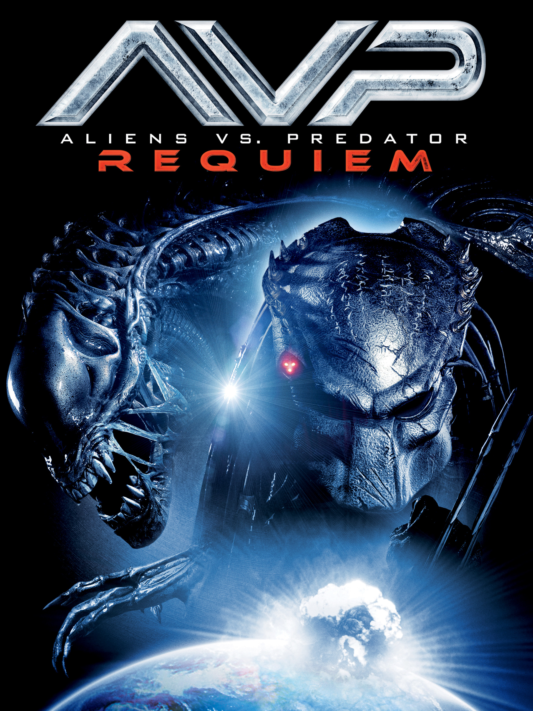

Aliens vs. Predator: Requiem (2007)

Diretor: Colin Strause e Greg Strause
Atores Principais: Steven Pasquale, Reiko Aylesworth, John Ortiz, Johnny Lewis e Ariel Gade
Gênero: Ficção Científica / Ação / Terror
Censura: 16 anos
Duração: 94 minutos (1h 34min)
Sinopse
Logo após os eventos do primeiro filme, uma nave de Predadores cai em uma floresta no Colorado, EUA. A bordo estava um híbrido mortal das duas espécies: o Predalien. A criatura escapa e começa a infestar uma pequena cidade vizinha com novos Aliens. Enquanto os moradores locais tentam desesperadamente sobreviver ao massacre, um Predador veterano e implacável é enviado à Terra com uma única missão: apagar todos os rastros da infestação, transformando a cidade em um campo de batalha brutal.
← Voltar ao catálogo